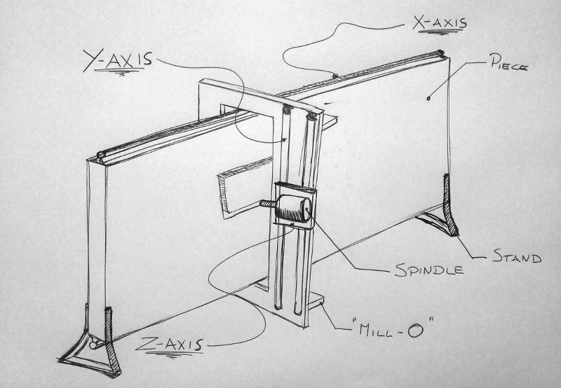

The big CNC is an amazing machine for a fablab, but it's pretty expensive and cumbersome. Smill aims to be a cheap alternative, that every fablab could buy or make. In particular, the first version of this project should be self-replicating, following the reprap philosopy.
This means to be able to move the machine and assemble it quickly when you get where you need it.
Think about be albe to assemble the machine inside your place and build your own furniture.
Smill is a milling machine with a "O" structure that allows it to move along the panel.

More about it here
We decided to use Git as an intermediate repository for the class.
A good way to access to git from your computer is Git Bash.
To install it, go to the msysgit featured downloads list and find the most recent "Full installer."
Here the main operations to do when you want to push your work:
git pull
in order to get an updated version of everything
git add <filename>
for selecting a specific file
or
git add .
for selecting all files
or
git add -u
for selecting already tracked files that are modified
git commit -m "message"
for saving a commit in the local repository. Please write a meaningful message.
git pull
in order to be sure that you have everything updated
git push
in order to send everything you commited to github